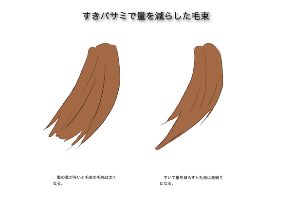
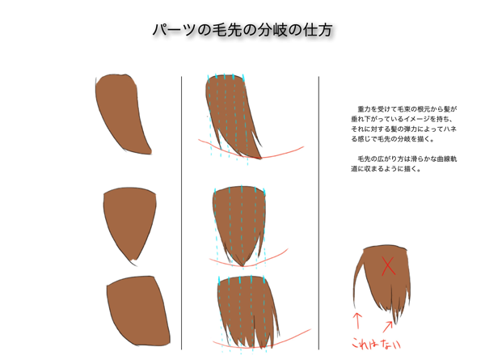

どんなにヘアスタイルの構造を理解したとしても、結局のところ「美しい髪」の描き方は分かりません。今回の記事では、前回の記事で提案した髪型デッサンを四段階に分類する方法を主軸に構えて、「髪型デザインの考え方」と「美しい髪とは何か」という2つの課題の接点を探っていこうと思います。
前回のヘアカットとデッサンを関連づけて考える髪の描き方の記事では髪をデッサンする過程を四段階に分類して、マクロからミクロへ掘り下げる方針を考案しました。今回のメインテーマについて説明します。「髪型デザインの考え方」というのは前回の記事のアイデアの延長で、より具体的な分類とその説明を明確に行います。デッサン自体には直接関係しませんが、髪型についての情報を樹形図にまとめて各情報の関連性を辿りやすくしておくことで、共通点で情報同士をリンクさせて新たな発展にも繋がるでしょう。２つ目の「美しい髪とは何か」というのは言うまでもなく美的感覚に関することです。どれだけ丁寧に本物のようにデッサンしてもそれが美しいとは限りません。なので人間が持っているクオリア（意味は後述）というものを参考にしつつ、どういう髪を描けば美しく見えるのかも考えます。簡単に言えば記号化について考察するということになります。
髪型デッサンの4段階を具体的に分類する
前回の記事では紹介に止めていた髪型デッサンの四段階ですが、もう少し具体的に説明しておこうと思います。説明の仕方としては、できる限りそれぞれの要素の名前を使って別の要素を説明するようにして、全体の関係性が繋がるように心がけています。例えば、毛先線のバラつき方はスタイルの髪の切り方によって色々あったりします。つまり、四段階に掘り下げるとは言っていますが順序を守る必要はなく、必要なときに立ち戻ったり、飛び石のように要点を繋げたりと、組合せ自由な一覧表と考えて良いでしょう。
各段階の特徴と掘り下げ方
| 段階 |
特徴 |
| スタイル |
これからデッサンする髪型の描き方を考えるために必要な情報を把握するもの。髪型のスタイルを決める段階なので、どうデザインするかでなく、大まかにどういう雰囲気にしたいかを考える。 |
| パーツ |
髪型のブロック分けを行って具体的にデザインする。パーツにはそれぞれ役割があり、第一段階で決めたスタイルに近づく形状を考える。 |
| 構成要素 |
第二段階まででは髪型の外形や髪の量といった物理的なことが対象なのに対し、ここではデザインの意図やキレイに見せる工夫といった感覚的な部分を考える。 |
| 描画線 |
第三段階で決めた表現方法を実践するために、ここでは描き方を考える。先入観にとらわれてぎこちない線を描かないために、最低限の質感は表現できる記号化された線を使う。 |
分類一覧
| 段階 |
分類 |
性質 |
特徴 |
| スタイル |
| ワンレングス |
面 |
毛束は太めで分岐も少なく、流れの方向に統一感がある。 |
| ボブ |
面 |
長さが短いため、毛束は一枚の板のようになる。 |
| グラデーション |
面 |
毛束に分岐が現れる。 |
| レイヤー |
面 |
毛束が先細りになる。 |
| パーツ |
| フロント |
面 |
前髪。分け目などの基準点から流れ線が始まり、毛先線と合流する。 |
| トップ |
面 |
髪型の表面となることが多い。つむじや分け目などの根元線を基準に流れが始まる。 |
| サイド |
面 |
もみあげ。フロントとのバランスで印象が変わる。 |
| インナー |
面 |
トップの下に隠れることが多い。見えない場合もしっかり意識しておかないと、後頭部の膨らみなどのウエイトを描けない。 |
| ネープ |
面 |
襟足 |
| 構成要素 |
| 流れ |
点 |
始点と終点の間の軌道のこと。球体表面を這うように分布する、立体感と関係が深い要素。 |
| 長さ |
線 |
長いほど髪が重くなり、流れ線のカーブは緩やかになる。 |
| ウエイト |
面 |
輪郭線で囲んだ部分の形という意味もあるが、ニュアンスとしては髪型の強調して膨れている部分が正しい。強調の仕方によって心理的な印象が変わる。 |
| 描画線 |
| 輪郭線 |
面 |
髪型の基礎を表す線。アタリ線のようなもので、最もシンプルな形状でブロックを配置する。 |
| 毛先線 |
点・線・面 |
曲線の根元側は、延長するとつむじに収束するように描く。パーツの輪郭線を崩さない程度なら分岐させても良い。 |
| 根本線 |
点 |
生え際、つむじ、分け目など、髪の流れ線の収束点のこと。 |
| 流れ線 |
点・線 |
重力のことを忘れずに、根元は伸び気味に、毛先は曲線気味に描く。言い方を変えると、根元は強制的な曲線、毛先は自然な曲線。明るい部分は少なめに、暗い部分は多めに描くと自然に見える。つまり立体の回り込み部分の線の密度が高くなる。 |
| 交差線 |
線 |
重力とその他の力が交差する部分や、大量の髪の毛が一点に収束する場合に、互いに押しのけ合って乱れた流れ線が交差線となる。 |
前回の記事で考案したヘアスタイルの分類も念頭に置いておいてください。詳細は下図です。


 髪型デッサンの四段階（引用 前回の記事）
髪型デッサンの四段階（引用 前回の記事）
ここでは思いついたものを取りあえず列挙しているだけなので、実際に描いてみたら新しいことを発見して追加されるかもしれませんし、必要ないと判断するかもしれません。少しずつ情報を充実させていくと着実に上達できると思います。スタイルに関しては、その都度目的のスタイルを当てはめるべきで、テンプレートに縛られては表現の幅が狭まってしまいます。なのでここで挙げたスタイルはただの一例だと考えて下さい。スタイルは時代とともに進化しますので。その他の項目についても次回の記事で実践した後どう結論付けるか興味深いところです。とにかく、これだけの量を一度で覚えられませんし、使い慣れていくしかありません。要は道具です。便利道具。
髪の毛が美しく見えるクオリアは何か
まずクオリアとは何ぞやという人の為にWikipediaから引用させて頂きますと、「簡単に言えば、クオリアとは「感じ」のことである。「イチゴのあの赤い感じ」、「空のあの青々とした感じ」、「二日酔いで頭がズキズキ痛むあの感じ」、「面白い映画を見ている時のワクワクするあの感じ」といった、主観的に体験される様々な質のことである。」すなわち「キレイ」とか「格好いい」の根拠を考えるときの学術的な分野で使われる事柄ということです。

そんなわけで、ここでは特に髪の毛に関して「美しさ」「格好よさ」のクオリアの解明に挑戦してみようと思います。先ほどのWikiのページにも書いていましたが、クオリアは日本語で感覚質と言っているように「性質」なのです。性質について考えるにはどうすればいいのでしょう。おそらく「髪の毛」ということはひとまず保留ということにして、髪の毛のようになびく物体が、なびく物体として見える要素が何かというところから考えるべきだと思います。と、ここまで考えて閃きました。なびく物体として見える要素とは、まさに髪型デッサンの四段階の「構成要素」であると。そして、髪の毛が上手く描けなくて悩んでいる人は、他人の真似だけでは本質の部分は理解できないこの段階でつまづくのだと思います。
それでは、なびく物体に見える要素というところから考えていきます。図解にある第三段階では「流れ」「長さ」「ウエイト」の三つを挙げています。この中でも特に重要なのは「流れ」「ウエイト」といった、視覚的な印象に直結する要素になります。「長さ」も視覚的な差異を生みますが、この差異は「流れ」や「ウエイト」に現れます。髪が長ければ流れも直線になり、短ければフワッとします。フワッとすれば「ウエイト」が頭頂部に偏り、髪が長いと頭頂部はペタッとします。いずれにしても重要でない要素はないわけですが、強いて言えば、今書いたように「フワッ」や「ペタッ」というのがクオリアです。「フワッと柔らかい”感じ”」や「ペタッと貼り付いた”感じ”」をどう表現するかがクオリアの解明ということです。日本語の特技である擬音で言い表せるとなると非常に理解しやすくなるのではないでしょうか。
ここまでで「構成要素」について考えましたが、この次は「描画線」についてです。この二つの段階の差を簡単に言えば表現の「方針」と「方法」です。「方針」はフワッとしたりペタッとしたいといった、髪というものがなびく物体である性質というか、質感を表現する方向性を考えるに止まりますが、「方法」となるとクオリアの解明が求められます。クオリアという言葉とデッサンがどのような関係にあるのかということについて、イラストレーターの安倍吉俊氏の漫画『回螺（カイラ）』に掲載されているあとがきから引用して説明します。
"僕がガラス瓶を見たとき、それを「明暗の、ある特徴的なパターン」という情報でなく「つややかな光沢と透明感のあるガラス」という質感として感じるのは何故でしょう？"
"（〜前略）同じように、線が集まってタッチをつくり、その集合体が人の意識に（例えば）ガラスの質感というクオリアを立上げ得るなら、文字を連ねて物語を書き出すように、筆跡の集積によって単に対象を正確に引き写すという以上の何かを表現できるのではないか。絵を描くという事は、形を正確に描くとか、色を正確に塗るというような事ではなく、モチーフとなるイメージを思い浮かべた時に、自分の意識の中にどのようなプロセスでクオリアが立ち上がるのかを観察し、自分の心が何に対して、どのように震えたのかを覚り、逆算し、記号に置き換え、そしてその記号、つまり「絵の言葉」によって、自分の意識の中に立ち上がったものと同じものを誰かの意識の中に立上げる事ができるような『絵の言葉によって記述された物語』として描き表す事なのではないか。"
安倍氏は絵を描くことについて理屈で語ってくれるので非常に参考になるのですが、つまり、表現の「方針」を線の濃さ・長さ・密度などの原始的な要素を制御する「方法」によって、絵を描く人の頭の中にある理想像をいかにして他人と共有できるか、その良い案配を見つけなくてはならないのです。それが記号化であり、クオリアの解明ということでしょう。下表は上の方で載せた「各段階の特徴と掘り下げ方」の表にクオリアの概念を取り入れて書き直したものです。第三段階以降のみ修正されています。
クオリアの概念を取り入れた各段階の特徴と掘り下げ方
| 段階 |
特徴 |
| スタイル |
これからデッサンする髪型の描き方を考えるために必要な情報を把握するもの。髪型のスタイルを決める段階なので、どうデザインするかでなく、大まかにどういう雰囲気にしたいかを考える。（table.01と同じ） |
| パーツ |
髪型のブロック分けを行って具体的にデザインする。パーツにはそれぞれ役割があり、第一段階で決めたスタイルに近づく形状を考える。（table.01と同じ） |
| 構成要素 |
パーツの質感を構成する要素に関係の深いクオリアを把握する。擬音などを用いて「〜な感じ」というイメージを持つ。 |
| 描画線 |
構成要素に関係の深いクオリアを解明する。なぜ「〜な感じ」に見えるのかという根拠を、描画線の濃さや密度で再現する方法を考える。 |
この線を描く時の原始的な要素というものも明確に分類しておいた方が後々役に立ちそうなので下表に図形を構成する要素のバリエーションをまとめてみました。それぞれ点、線、面の三つに分類し、それらの子要素としていくつか列挙しています。分類一覧表で書いていた「性質」の欄と照らし合わせて、第四段階からさらに掘り下げることが可能となり、クオリアを解明するときの手がかりになればいいと思います。子要素についても単独でなく、互いに関連し合っているものもあるので、このあたりはやはり実践の中で気づいていくしかないかもしれませんね。線を描く時に最も根本にあることなので、新しい「描き方」を探したいときはこれらの組合せをいじってみるといいと思います。
描画線の原始的要素
| 図形の要素 |
原始的な要素 |
| 点 |
位置、連続性、密度 |
| 線 |
カーブ、太さ、連続性、密度 |
| 面 |
形、バランス |
美しい髪のクオリアを求めて
アニメーションのキャラクターデザインは、企画の初段階でキャラクターの設定画を描きます。（実際のことは知らないので知ったかぶりで話を進めます）そのコンセプトには、これから二次元のキャラをアニメートして生き生きと躍動させるための仕掛けが盛り込まれています。例えば、目を描くときの肌色と白目の境界は実線で描くか、色トレスで描くかで、絵柄の濃さや表情の幅に影響がでます。また、影の境界線の付け方をシンプルで直線的にすればスタイリッシュになり、骨格の凹凸までリアルに描くと情緒的になったりなど。それは髪の描き方にも同じ事が言えます。
試しに四段階を掘り下げて考えてみましょう。第一段階で、キャラクターのイメージに合ったスタイルを考え、ここでは仮に直毛でショートヘアのグラデーションカットとしましょう。第二段階でパーツの形状を考え、フロントに関しては七三分けで少し目にかかるくらいということにします。第三段階で、前髪は風になびくと柔らかい流れを描いて揺れながらバラけてウエイトが拡散する、と決めたとします。
この時点でかなり細かいニュアンスまで決まってしまいました。キャラデザインをした人の頭の中には、既に言葉の通り、むしろそれ以上の理想像が出来上がっているので、これから移る第四段階の責任は重大です。その責任はキャラデザイナーではなく、実際に線を描く役職である作画スタッフにかかっているのです。第四段階はそういったコンセプトを視聴者に認識させれられる画力が問われるのです。
気づいたこと
- 一直線状に並ぶのは良くない。それは幾何学的に見えて柔らかさがない。毛先でも分岐点でも、流れの方向に逆らわない範囲でズラして描く。
- すきバサミで髪の毛の量が調性されていることを忘れてはならない。すいた量が多ければ、根元に比べて毛先の毛束は細くなる。
- 流れ線を等間隔で分布させると光源の位置が曖昧になり、木彫りのオブジェのように嘘っぽくなってしまう。頭部の球面の張り出しや回り込み、明暗に対応した線の密度がある。
- 毛先線の分岐は、根元線から垂れ下がった髪の毛の一本一本に加わる重力、弾力、風力(?)を考慮しながら描く。分岐してハネた髪の毛が元の毛束から離れていくとき、毛先の軌道は緩やかなカーブを描く。
- 毛束の輪郭線の形がどのような動きを連想させるか、連想した動きの方向と、その毛束から分岐する毛先線の連なりの方向がどうなっているか。上手く馴染ませると柔らかさが生まれる。



まとめ
改めて四段階の全体的な役割をまとめてみると、第一〜ニ段階までは「見た目」を考え、第三〜四段階は「見栄え」を考えていますね。「見た目」を考えるときは「〜な形がこう配置されている」と断定的で、「見栄え」を考えるときは「〜な感じをこう描くとそう見える」と抽象的です。だから記号化するためにはまず人間の一般的な心理を解剖し、どう表現するかの根拠であるクオリアを知る必要があったわけですね。これはまた果てしない難題を掘り起こしてしまいました。しかし、向かう方向は分かっているのに失敗して進めないという、こんなに悔しいのは久しぶりでした。何をすれば良いのかが分からない状態ではないので、絶対に美しい髪の描き方を見つけてやろうと思います。次回の記事では、とにかく描きまくってクオリアの正体にたどり着いたという自慢話でもしようと思うのでご期待ください。